我们准备好迎接 Agent 原生记忆系统了吗？
该论文从数据管理视角系统回答“我们是否已准备好 Agent 原生记忆系统”。针对现有评测只用端到端任务指标（F1、BLEU）、把记忆系统当黑盒的局限，作者提出将记忆分解为表示与存储、抽取、检索与路由、维护四个模块的分析框架与分类法，在 5 类基准工作负载、11 个数据集上统一评测 12 个代表性记忆系统与 2 个基线，并做单模块受控消融。关键结论：没有单一架构全场景占优，效果取决于记忆结构与工作负载瓶颈的匹配；局部化维护比全局重组更省成本，高结构化系统延迟高出数量级但精度收益不成比例；写时保留原始内容比增加抽象或层级更重要，保守合并是最佳默认维护策略。对团队记忆系统选型与自建评测体系有直接参考价值。
现有 Agent 记忆评测主要依赖端到端任务成功指标（如 F1、BLEU），把记忆系统当作单体黑盒，导致运维成本、模块间架构权衡、动态知识更新下的鲁棒性等系统级问题未被充分探索；记忆系统架构高度碎片化，缺乏从数据管理视角出发的统一测试床、跨系统公平比较与细粒度归因分析。
提出四模块分析框架 M_sys = ⟨R, S, Q, U⟩：记忆表示与存储、记忆抽取、记忆检索与路由、记忆维护，并为每个模块建立结构化分类法（如维护侧的时间戳多版本、容量驱逐、LLM 语义合并、参数化优化等）。在统一测试床（含统一时间开销记录）上，对 12 个代表性记忆系统与 Long Context、Embedding RAG 两个基线，围绕任务有效性、检索保真度、更新鲁棒性、长程稳定性、运维成本五个研究问题做端到端评测（覆盖 LoCoMo、LongMemEval、DB-Bench、LongBench 等 11 个数据集），并通过每次只修改一个模块的受控变体进行细粒度消融，量化各模块对表示保真度、路由精度与更新正确性的独立影响。
无单一系统全场景占优：Zep 在 LongMemEval 达 48.0 LLM Judge Accuracy，MemOS 在 LoCoMo 达 11.5 Exact Match，MemoChat 在 DB-Bench 达 55.40 Task Success Rate（Long Context 基线为 48.20 EM）
检索保真度：SimpleMem Recall@1 最高（39.0），但 A-MEM 与 MemTree 在更大检索预算下更强，分别达 69.5/85.9 与 59.7/80.5（Recall@5/@10），且随证据距离增大更稳定，而 Embedding RAG 在最短距离档后急剧下降
更新鲁棒性：Zep 在 Knowledge Update 领先（44.4 Substring EM / 36.8 ROUGE-L F1），Cognee 在 Temporal Reasoning 领先（18.7 Substring EM）；更换 4 个 LLM backbone 后 MemOS 仍保持最强（32.2/41.2/38.6/41.2），系统排序基本不变
长程稳定性：LongBench 上 SimpleMem 从 Short 到 Medium 桶仅从 35.2 降到 34.9 Accuracy，而 Long Context 从 42.6 跌至 19.0；LoCoMo 上 Embedding RAG 随证据距离增大从 37.1 跌至 7.4 Answer F1
运维成本：LightMem 以 3.67s 平均操作延迟达到 48.3 归一化效用，MemTree 达 63.5@15.9s；Cognee 与 Zep 需 116.5s/155.1s 才超过 84 效用；LongBench 上 LightMem 仅 17.3s，而 Mem0/MemoChat/MemoryOS/A-MEM 达 374.2/460.2/490.0/552.1s
表示消融：LightMem User-Only Raw 在全部四项指标最优；User-Only Compressed 在 LongMemEval Substring EM 从 26.0 降到 10.7；MemOS Fast Memorize 在 LoCoMo 远超 Fine Memorize（25.5 vs 2.5 EM；40.8 vs 5.0 Ans. F1）
检索消融：A-MEM Hybrid-Balanced 优于 Sparse-Leaning（24.6 vs 23.0 Ans. F1）；SimpleMem 加 Planning 后最佳（20.7 Ans. F1、90.6 Strict Rec.），再加 Reflection 无进一步收益
维护消融：MemoryOS Conservative-Merge 优于默认设置（23.5 vs 23.2 Ans. F1；22.8 vs 22.4 Substr. EM），Delayed-Flush 降至 20.6/19.5，MemoChat 强制单主题摘要也低于默认（16.2/16.8 vs 16.6/18.4）
与以往以 NLP 端到端指标为主、把记忆当黑盒的评测不同，本文把 Agent 记忆当作独立的数据管理基础设施来研究：给出四模块分解与统一分类法，在统一测试床下纳入此前未被评测的系统（如 MemoChat、MemTree、LightMem），显式度量证据级检索保真度、冲突知识下的更新鲁棒性、长程稳定性以及索引构建时间/查询延迟等运维成本，并通过单模块受控变体实现细粒度归因；同时明确划清了记忆系统与 RAG（无状态只读检索）和 context engineering（单轮上下文组装）的边界。
相关度级别：high
命中能力域：3.1 上下文工程与记忆 | 3.5 评测与可靠使用
理由：论文的核心研究对象正是 3.1 中的 Agent 记忆系统——覆盖表示、存储、检索、更新、维护的完整生命周期，并系统讨论了与 RAG、context engineering 的分工边界；同时其方法论本身就是 3.5 的典型实践：统一测试床、多维评测指标（检索保真度、更新鲁棒性、长程稳定性、每查询延迟与成本）与细粒度消融。团队在构建知识库问答、长期会话 Agent 与工程自动化流程时必须选型或自建记忆层，本文的选型结论（无万能架构、按工作负载瓶颈匹配、局部化维护更省成本、写时保守抽取、查询时规划优于反思）与评测维度均可直接复用。
建议动作：深入精读并做内部分享
arXiv:2606.24775v1 [cs.CL] 2026年6月23日
Wei Zhou
上海交通大学
weizhoudb@sjtu.edu.cn
清华大学 liguoliang@tsinghua.edu.cn
面向大语言模型（LLM）Agent 的记忆已从简单的检索增强机制迅速演变为一种数据管理系统，该系统支持在 Agent 执行全过程中进行持久化信息存储、检索、更新、整合以及动态生命周期治理。尽管经历了这一演变，现有评估仍主要通过端到端任务成功指标（例如 F1、BLEU）对 Agent 记忆进行基准测试，同时将底层系统视为一个单体黑盒。因此，包括运行成本、各记忆模块之间的架构权衡以及动态知识更新下的鲁棒性等关键系统级问题，仍未得到充分探索。
本文从数据管理的视角对 Agent 记忆开展了系统性的实验研究。我们提出了一个分析框架，将 Agent 记忆分解为四个核心模块：记忆表示与存储、抽取、检索与路由，以及维护。在该框架下，我们在跨越 11 个数据集的 5 个基准测试（benchmark）工作负载上评估了 12 个代表性记忆系统和 2 个参考基线。我们广泛的端到端评估表明，没有任何单一架构能够在所有场景中占据主导地位；相反，其有效性在很大程度上取决于记忆结构与工作负载瓶颈的契合程度。此外，通过细粒度的消融研究，我们量化了各模块对表示保真度、检索精度、更新正确性以及长时程稳定性的各自影响。最后，我们揭示了真实工作负载下的成本-性能权衡，表明局部维护比全局重组更具成本效益。基于这些发现，我们识别出了构建真正 Agent 原生记忆系统的若干有前景的方向。相关代码已公开于 https://github.com/OpenDataBox/MemoryData 。
大语言模型（Large Language Model, LLM）Agent 的快速演进，催生了大量围绕构建 Agent 记忆（agent memory）的令人振奋的研究与产业实践。Agent 记忆即 LLM Agent 的数据管理系统，用于支持长时程有状态执行与个性化交互 [9, 13, 17, 19, 23, 24, 28]。
如图 1 所示，现有的 Agent 记忆系统涵盖了多种多样的架构设计。（1）流式-反思记忆系统（Stream-and-Reflection Memory System，如 MemoryBank [39]）将经验维护为带时间戳的记忆流，并周期性地将其总结为更高层次的反思（reflection），再写回该记忆流；
∗ Xuanhe Zhou 为通讯作者。
Xuanhe Zhou ∗ 上海交通大学
zhouxuanhe@sjtu.edu.cn
Zhiyu Li MemTensor（上海）科技有限公司 lizy@memtensor.cn Shaokun Han 上海交通大学 areedd0@sjtu.edu.cn Hongming Xu 上海交通大学 muzhihai@sjtu.edu.cn Feiyu Xiong MemTensor（上海）科技有限公司 xiongfy@memtensor.cn Fan Wu 上海交通大学 fwu@cs.sjtu.edu.cn
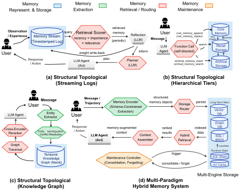
（2）分层分级记忆系统（Hierarchical Tiered Memory System，如 MemGPT [25]）将记忆组织为具有不同容量与访问特性的多个层级，将核心记忆与归档存储分离开来，并通过跨层的显式移动（如逐出与提升）加以管理；（3）知识图谱记忆系统（Knowledge Graph Memory System，如 Mem0 𝑔 [5]、Zep [26]）以结构化形式（如时序知识图谱）表示实体、关系及其时间演化，通常还包含实体消歧与冲突消解；（4）复合混合记忆系统（Composite Hybrid Memory System，如 A-MEM [33]）将模式感知的记忆对象路由到多种存储基底之上，显式地将运行时状态（如 KV 缓存）与长期存储（如向量、图、关键词索引）分离，并由专门的维护模块进行管理。然而，这种快速涌现也导致了一个高度碎片化的格局，缺乏从数据管理视角出发的系统性评估，由此引出一个自然的问题：我们准备好迎接 Agent 原生记忆系统了吗？
在本文中，我们针对 Agent 记忆重新审视这一问题。具体而言，我们关注基于文本、结构化乃至参数化表示的系统级记忆 [5, 25, 26, 33]，它是现代自主 Agent 的一项基础性基础设施组件。我们关注以记忆为中心的系统，而非将记忆作为辅助模块的面向特定任务的 Agent 框架 [1, 40]。正是这一持久化数据管理系统，在与大语言模型（LLM）的参数化权重和易失的上下文窗口解耦的情况下，维护着超越单次推理步骤的信息（例如历史交互、环境观测以及工具执行的中间结果）。Agent 框架依赖这些外部记忆系统（例如 Mem0 [5]、Letta [25]、Zep [26] 和 A-MEM [33]）来主动写入、更新和索引相关上下文，并将其路由回推理循环中。长时程 Agent 的能力在很大程度上取决于这一记忆层的可靠性与效率。采用设计不佳的记忆架构的 Agent 在持续执行期间可能出现事实矛盾、灾难性遗忘或不可接受的延迟 [6, 38]。
近期的基准测试（benchmark）[20, 22, 29, 31] 已对 Agent 记忆进行了评估，结果表明外部记忆可以提升 Agent 在需要事实回忆与长上下文理解的任务上的性能。然而，这些评估在很大程度上根植于自然语言处理，并且在将 Agent 记忆视为数据管理系统时存在多重局限（参见第 2 节）。首先，它们未能在统一的工作负载下评估许多代表性的记忆架构（例如 MemoChat、MemTree 和 LightMem 等系统未被纳入先前的评估），使得有原则的跨系统比较难以进行。来自数据库社区的工作 [32] 将范围局限于少数以聊天机器人为中心的数据集（例如仅有 LoCoMo 和 LongMemEval），忽略了复杂的 Agent 式执行场景。其次，现有的基准测试主要依赖单侧的、端到端的任务成功指标（例如 F1 和 BLEU 分数），而非全面的评估套件。它们未能显式地隔离并度量诸如证据级检索保真度、冲突知识下的动态更新鲁棒性以及长时程稳定性等多维性能指标。第三，它们很少从系统视角度量关键的运行成本，例如索引构建时间和查询延迟，而这些对于生产部署至关重要。最后，它们将记忆系统视为单体式的黑盒，而不是将其分解为基本的数据管理模块以进行隔离的、细粒度的分析。
我们克服了这些局限，并从数据管理的视角开展了全面的实验与分析。贡献如下。
(1) 技术分解与分类（第 3 节）。我们将现有的 Agent 记忆系统分解为四个核心组件：(i) 记忆表示与存储，(ii) 记忆提取，(iii) 记忆检索与路由，以及 (iv) 记忆维护。针对每个组件，我们进一步依据底层设计原则对现有方法进行归类，建立了一个结构化的分类体系 1，从而实现有原则的比较。
(2) 整体端到端性能评估（第 4 节）。我们在统一且公平的测试平台（例如，统一的时间开销轨迹）2 上，针对涵盖 11 个数据集的五种不同的基准测试（benchmark）工作负载开展了端到端评估。我们的研究涵盖 12 个具有代表性的记忆系统，每个系统都体现了表示、存储、路由与维护策略的不同组合。我们从五个角度评估其性能：任务有效性（RQ1）、检索保真度（RQ2）、动态更新鲁棒性（RQ3）、长时程稳定性（RQ4）以及运行成本（RQ5）。
1 https://github.com/OpenDataBox/awesome-agent-memory
2 https://github.com/OpenDataBox/MemoryData
借助我们的四模块框架，我们对每个技术组件中的代表性策略开展了受控的细粒度实验。通过系统地生成每次仅修改一个模块的受控变体，我们量化了它们的性能权衡，并评估了它们各自对表示保真度、路由精度和更新正确性的影响。
(4) 富有洞见的发现。基于我们的实验结果与深入分析，我们提炼出一组关于 Agent 记忆系统成本-性能权衡的富有洞见的发现：
❶ 记忆系统在不同的 Agent 请求工作负载下是否有效？没有任何单一记忆架构能够在所有场景中占据主导。复合式混合系统在对话式问答（QA）上领先，而基于图的方法在单跳事实召回方面表现出色，但在时序推理上则表现吃力。此外，有效的记忆系统在不同大语言模型（LLM）骨干变体之间依然保持稳健，因为它们在答案生成之前将证据定位外置化。
❺ Agent 记忆的运行成本如何？高度结构化的系统在索引构建时间和查询延迟方面比轻量级存储高出数个数量级，却并不能始终带来与之成比例的准确率提升。
❻ 各个记忆组件何时会出错？每一层抽象（例如压缩、摘要和事实抽取）都会逐步丢弃信息。此外，细粒度的基于 LLM 的抽取能够带来适度的精确率提升，却会显著损害多跳推理。最后，保守的记忆巩固（consolidation）可作为最佳的默认维护策略，而延迟刷写（delayed flushing）则在表面覆盖与实际可答性之间制造了一种具有欺骗性的权衡。
为支撑本文余下部分的讨论，我们首先从数据管理的视角厘清智能体记忆（agent memory）的范畴。尽管近期研究已从认知分类学、智能体架构以及基于图的组织等视角对记忆进行了考察 [6, 10, 30, 32, 34, 36]，但这一底层概念往往仍主要被视为 LLM 或智能体流水线中的一个算法组件 [6, 10, 36]。与之不同，我们将智能体记忆作为一个独立的数据管理对象和系统基础设施来研究，并明确关注它在真实智能体工作负载下如何被表示、存储、检索、更新和维护。基于这一视角，我们在下文中给出一系列定义。
记忆类型。对于 LLM 智能体而言，会产生并可能需要记忆的信息种类繁多，包括对话历史、工具执行日志、提炼出的事实以及用户偏好 [36]。遵循既有的认知框架，记忆可以大致沿两个维度加以组织 [10, 30]。(1) 沿时间维度，短期记忆保存进行中会话的易失状态，而长期记忆则跨会话持续存在。(2) 沿功能维度，长期记忆进一步划分为诸如具体的过往事件（情景记忆，episodic memory）、抽象的事实知识（语义记忆，semantic memory）[10, 32]、可复用的行动策略（程序性记忆，procedural memory）以及用户偏好等信息。
智能体记忆。我们将智能体记忆 M 定义为一种持久化的数据管理对象 [25, 32]，它在单次推理步骤之外维护这一累积状态，并使智能体在未来的推理与行动过程中能够访问该状态 [10, 36]。
智能体记忆系统。要使智能体记忆 M 得以实际运行，需要一个健壮的基础设施 [10, 25]。如表 1 所示，我们从数据系统的视角 [14, 32] 将智能体记忆系统形式化为由四个模块构成的元组：M 𝑠𝑦𝑠 = ⟨R , S , Q , U⟩，其中每个模块负责记忆生命周期中的一个不同阶段。
与 RAG 和上下文工程的区别。检索增强生成（Retrieval-Augmented Generation，RAG）[8, 13] 通常作为一种无状态、只读的检索原语运作：给定一个查询，它从静态语料库中获取相关段落，以增强单次生成步骤。上下文工程（context engineering）[2] 则是一种更宽泛的实践，即在每次推理轮次中对有限的 LLM 上下文窗口进行编排整理（例如动态选择提示词、工具描述和检索到的事实），以缓解上下文腐化（context rot）[2]。与之不同，智能体记忆系统 (1) 是一个持久且可更新的基础设施，用于随时间推移管理智能体特有的状态；(2) 管辖完整的长期记忆生命周期，包括记忆的表示、存储、检索和维护，而不仅仅是打包当前的上下文窗口。
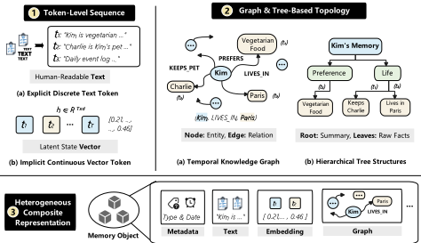
与传统数据库工作负载的区别。Agent 记忆工作负载与传统数据库的联机事务处理（OLTP）/ 联机分析处理（OLAP）工作负载存在显著差异 [17, 25]。首先，记忆访问往往是语义性的，而非纯粹基于谓词的 [4, 11]。查询通常通过自然语言、部分上下文或潜在意图来表达，因此需要依赖近似匹配、查询重写或 LLM 引导的检索，而非仅仅依赖僵化模式上的精确逻辑谓词。其次，记忆内容在持续且可能相互冲突的观测下不断演化。在传统事务场景中，更新通常在预定义的模式和一致性模型下覆写元组；与之不同，Agent 记忆必须容纳跨时间、工具与环境收集的不确定、不完整且有时相互矛盾的信息 [10, 38]。第三，Agent 记忆工作负载在访问模式和粒度两方面都高度异构。单一工作负载可能同时结合长上下文综合、情景回忆、结构化事实查找、时序推理和流式更新。因此，实际系统往往需要在同一记忆架构内结合语义检索、结构化过滤与拓扑感知遍历的混合执行策略 [25, 32]。这些特性将 Agent 记忆与传统数据库区分开来，从而催生了专门的抽象与评估方法学。
在本节中，我们围绕第 2 节中的四个组件仔细分析现有的 Agent 记忆系统，并建立一个统一的分类体系，以总结各组件的代表性方法。
该模块由两个组件构成：（1）逻辑表示（logical representation），定义暴露给 Agent 系统的结构化编码与组织方式，直接决定了容量、可访问性，以及在表达能力、检索粒度和下游推理兼容性方面的权衡；（2）物理存储（physical storage），指定持久化与索引结构，例如易失性的上下文内寄存器、稠密向量引擎或拓扑图数据库。
| Category. | Method | Memory Representation & Storage.Representation | Memory Representation & Storage.Storage | Memory.Extraction | Memory Retrieval & Query Routing. | Memory Maintenance. |
|---|---|---|---|---|---|---|
| Sequential Context | MemoChat [18] | ❶ Token-Level Sequence (Structured JSON Memos) | ❶ Transient In-Context Registers | ❸ Schema-Constrained Extraction (LLM Topic Segmentation) | ❹ Autonomous Agentic Routing (LLM Topic Selection) | ❸ LLM-Driven Semantic Consolidation (Turn-Triggered) |
| Sequential Context | Mem0 [5] | ❶ Token-Level Sequence (Discrete Facts) | ❷ Specialized Single-Engine (Vector DB) | ❷ Schema-Free Extraction | ❷ Semantic-Based Retrieval | ❸ LLM-Driven Semantic Consolidation (Tool-Calling) |
| Sequential Context | MEM1 [41] | ❶ Token-Level Sequence | ❶ Transient In-Context Registers | ❶ Raw Sequence Concatenation | ❶ Native Attention-Based Retrieval | ❷ Capacity-Driven Physical Eviction |
| Sequential Context | MemAgent [35] | ❶ Token-Level Sequence | ❶ Transient In-Context Registers | ❶ Raw Sequence Concatenation (Recursive Summaries) | ❶ Native Attention-Based Retrieval | ❷ Capacity-Driven Physical Eviction (RL Overwrite) |
| Structural Topological | MemTree [27] | ❷ Graph & Tree-Based Topology (Hierarchical Tree) | ❷ Specialized Single-Engine (Vector DB) | ❷ Schema-Free Extraction (Top-Down Embedding) | ❷ Semantic-Based Retrieval (Collapsed Tree) | ❸ LLM-Driven Semantic Consolidation (Recursive Aggregation) |
| Structural Topological | Zep [26] | ❷ Graph & Tree-Based Topology (Temporal KG) | ❷ Specialized Single-Engine (Graph DB) | ❸ Schema-Constrained Extraction (Triplets) | ❺ Multi-Stage Hybrid Execution (Dense + BM25 + BFS) | ❶ Timestamp-Based Multi-Versioning (Logical Invalidation) |
| Structural Topological | Mem0 𝑔 [5] | ❷ Graph & Tree-Based Topology (Labeled Graph) | ❸ Heterogeneous Multi-Engine (Vector + Graph DB) | ❸ Schema-Constrained Extraction (Entity-Relation) | ❸ Topological Subgraph Traversal | ❶ Timestamp-Based Multi-Versioning |
| Structural Topological | Cognee [21] | ❷ Graph & Tree-Based Topology (Entity-Relation Triplets) | ❸ Heterogeneous Multi-Engine (Graph + Vector + Relational DB) | ❸ Schema-Constrained Extraction (ECL Pipeline via Pydantic) | ❸ Topological Subgraph Traversal (Dense-Seeded Triplet Extraction) | ❶ Timestamp-Based Multi-Versioning (Hash-Based Deduplication) |
| Multi-Paradigm Hybrid | LightMem [7] | ❸ Heterogeneous Composite (Tripartite Schema) | ❷ Specialized Single-Engine (Relational DB) | ❷ Schema-Free Extraction (Entropy-Gated) | ❷ Semantic-Based Retrieval | ❶ Timestamp-Based Multi-Versioning (Append-Only Logs) |
| Multi-Paradigm Hybrid | SimpleMem [16] | ❸ Heterogeneous Composite | ❸ Heterogeneous Multi-Engine (Vector DB + BM25 + SQL) | ❸ Schema-Constrained Extraction | ❹ Autonomous Agentic Routing (Query Expansion) | ❸ LLM-Driven Semantic Consolidation (On-the-Fly Synthesis) |
| Multi-Paradigm Hybrid | MemOS [15] | ❸ Heterogeneous Composite (MemCube) | ❸ Heterogeneous Multi-Engine (Vector + Graph DB) | ❸ Schema-Constrained Extraction (Semantic Parser) | ❺ Multi-Stage Hybrid Execution (Boolean + Semantic) | ❶ Timestamp-Based Multi-Versioning (Differential Writes) |
| Multi-Paradigm Hybrid | MemoryOS [12] | ❸ Heterogeneous Composite (Segment-Page) | ❸ Heterogeneous Multi-Engine (Keyword Index + Vector DB) | ❸ Schema-Constrained Extraction | ❺ Multi-Stage Hybrid Execution (Hierarchical Routing) | ❷ Capacity-Driven Physical Eviction (Heat-Based Eviction) |
| Multi-Paradigm Hybrid | A-MEM [33] | ❸ Heterogeneous Composite (Atomic Notes) | ❸ Heterogeneous Multi-Engine (Vector + Graph DB) | ❸ Schema-Constrained Extraction (JSON Attributes) | ❸ Topological Subgraph Traversal | ❸ LLM-Driven Semantic Consolidation (Mutation & Pruning) |
| Multi-Paradigm Hybrid | Letta [25] | ❸ Heterogeneous Composite (Context Tiers) | ❷ Specialized Single-Engine (Relational DB) | ❸ Schema-Constrained Extraction | ❹ Autonomous Agentic Routing (Function Calling) | ❷ Capacity-Driven Physical Eviction (Queue Flush) |
| Category. | Method | Memory Representation & Storage.Representation | Memory Representation & Storage.Storage | Memory.Extraction | Memory Retrieval & Query Routing. | Memory Maintenance. |
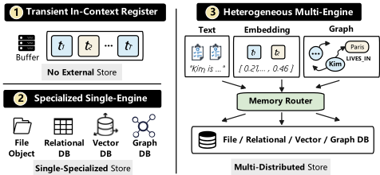
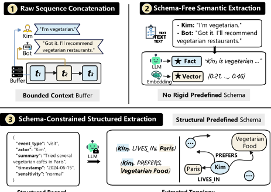
结构化记录 提取拓扑
MemOS 提出了 MemCube，这是一种统一的数据对象，将记忆组织为三种不同的载荷（纯文本、激活和参数化记忆），并附带结构化细节（例如 ID 标签）。
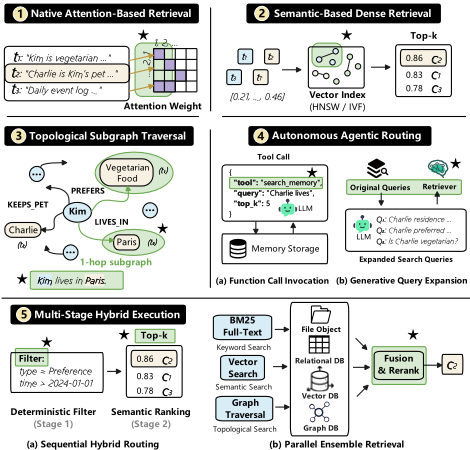
载荷分配至高度专业化的独立后端，通过标准化的记忆适配器接口融合向量数据库与图数据库。
记忆提取关注的是如何以计算方式处理原始交互轨迹。它同时涵盖提取流水线，即语言模型如何将非结构化文本提取、总结或解析为逻辑结构。如图 4 所示，它定义了 Agent 记忆系统如何在物理持久化之前，将异构输入流（例如多轮对话和工具执行日志）转换为逻辑记忆原语。
模式，其中 Zep 额外应用了一个受反思启发的验证步骤，以抑制幻觉生成的三元组。MemoChat 则通过利用大语言模型（LLM）将对话切分为严格的 JSON 模式，填充预定义的结构化字段，以确保数据的可预测性。
记忆检索与查询路由决定了 Agent 记忆系统如何动态地识别并提取相关历史上下文，从而为整体 Agent 当前的推理状态提供信息。如图 5 所示，该模块涵盖了完整的查询执行谱系，定义了用于遍历索引的操作算法、谓词求值以及 Agentic 工作流。
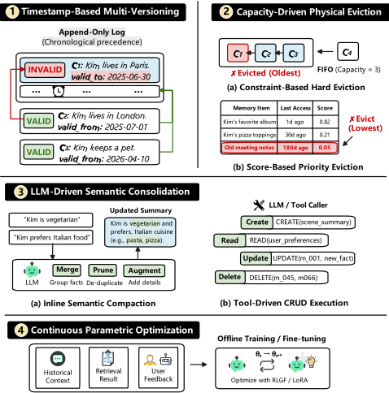
记忆维护关注记忆如何随时间推移被更新、维护、压缩、遗忘，并最终被移除。
6
如图 6 所示，它刻画了记忆在创建之后的动态行为，包括新信息如何被纳入、过时或冲突的内容如何被修订，以及系统如何在资源有限的情况下控制记忆增长。
❶ 基于时间戳的多版本管理。这一类别并不执行物理行删除，而是利用时间戳元数据和仅追加（append-only）日志，以逻辑方式废弃过期事实，从而保留历史连续性。Zep 和 Mem0 𝑔 通过显式的元数据变更进行操作，利用有效性标志和时间戳将过时或冲突的关系标记为逻辑无效，从而避免物理删除。LightMem 采用仅追加方式，增量式地插入带时间戳的事实流；而 SimpleMem 则利用 ISO-8601 时间戳，通过严格的时间先后优先级来解决矛盾。MemOS 综合运用这些技术，利用结构化的 Update API 执行差分写入，并无缝更新溯源 ID 以生成多版本链。❷ 容量驱动的物理驱逐。与基于时间戳的多版本管理不同，这一类别通过物理丢弃或无条件覆盖数据来管理无界的记忆增长。它通过严格的确定性
▶ 基于约束的硬驱逐。该子类别利用确定性规则——例如严格的 FIFO 队列、固定的序列边界或硬性 token 上限——来无条件地驱逐较旧的状态，以此强制执行刚性的执行边界。MemAgent 执行结构性覆盖，实现了一种程序化调度算法，在每个固定分段边界处无条件地用新合成的摘要块替换较旧的记忆序列。MEM1 强制执行硬性容量限制，通过一种系统强制的截断机制运行，该机制执行自动化的 FIFO 修剪协议，一旦活动上下文阈值被突破，便驱逐较旧的标签。Letta 通过阈值刷新进行操作，借助一个借鉴操作系统设计的队列管理器来严格管理缓冲区容量；当 token 计数突破最终上限时，它会强制执行刷新序列，将较旧的消息驱逐到次级召回存储中。
▶ 基于评分的优先级淘汰。该子类别不依赖静态容量限制，而是通过持续计算时间衰减或访问频率评分，动态地强制数据在物理层面过时。在量化访问频率方面，MemoryOS 通过一个在检索频率与指数时间衰减之间取得平衡的标量 Heat 评分来衡量分段的活跃度，并执行以热度最低的分段为物理目标的优先级淘汰。❸ 大语言模型（LLM）驱动的语义整合。该类别作为认知调控器运行，利用 LLM 在查询或持久化阶段之前动态化解逻辑冲突，并将冗余的观察抽象为稠密摘要。
▶ 内联语义压缩。在活跃写入阶段，该子类别将新摄取的数据与现有记忆节点进行动态评估与整合，在数据库事务提交之前系统性地合并冗余断言（例如，将三轮相似的对话压缩为一个稠密摘要节点）。SimpleMem 即时执行在线语义合成，在数据库事务提交之前系统性地将结构相似的断言合并为单一的稠密抽象。MemTree 利用一种核心调度操作，递归地在所有父节点上触发语义摘要提示，从而将历史状态与新载荷动态融合。
▶ 工具驱动的 CRUD 执行。与自动化融合不同，该子类别通过离散的、程序化的状态变更来实施维护，这些状态变更由 LLM 驱动的工具接口显式引导，此类接口会发出明确的创建、读取、更新或删除（Create, Read, Update, or Delete, CRUD）命令。Mem0 严格通过结构化的 LLM 工具调用接口来实施其动态维护，这些接口涵盖诸如 UPDATE 和 DELETE 等离散的程序化状态变更。❹ 持续参数优化。该类别将状态更新与在线推理延迟完全解耦，将繁重的神经网络优化作为异步后台进程执行，修改的是实际模型参数而非外部数据库模式（例如，在隔夜批次上运行持续微调）。例如，MemoRAG 使活跃推理 token 严格保持静态且只读，仅通过一种带生成反馈的强化学习（Reinforcement Learning with Generation Feedback, RLGF）算法框架在离线训练阶段优化提取质量。
在本节中，我们围绕五个研究问题对 Agent 记忆系统进行了系统性评估。在五个各不相同的基准测试（benchmark）工作负载和 11 个数据集上，我们将 12 个具有代表性的记忆系统与基线进行对比评估，以刻画其性能。具体而言，这五个研究问题如下。
实验设置。针对“不同的 Agent 记忆系统能否在各工作负载上成功提升端到端任务性能？”这一问题，我们在三个端到端工作负载上评估了 12 个具有代表性的记忆系统和两个参考基线（Long Context 与 Embedding RAG），以考察记忆能否在底层大语言模型（LLM）之外进一步提升任务成功率。具体而言，我们使用：(1) LoCoMo [20]：一个长对话问答（QA）基准测试，用于测试多轮交互中的情景记忆、时间记忆和开放域记忆，并报告四类查询上类别级精确匹配（Exact Match, EM）与答案 F1 的非加权平均值；(2) LongMemEval [31]：一个多会话长期记忆基准测试，评估系统能否跨会话重新关联事实并对时间上分布的证据进行推理，并报告来自 MemoryAgentBench [22] 的子串精确匹配（Substring EM）、ROUGE-L F1、ROUGE-L Recall 以及基于 GPT-5.4 的 LLM 评判准确率（LLM Judge Accuracy）；以及 (3) DB-Bench：评估记忆能否支持 LifelongAgentBench [37] 中跨数据库操作的程序性执行，并报告精确匹配（EM）和任务成功率（Task Success Rate）。
O1-(Cross-Workload Effectiveness): No single memory systemdominates all workloads, but methods that preserve taskcritical evidence through structure-guided filtering remain the most competitive overall. As shown in Figure 7, the leading systems shift across workloads: (1) Structure-aware systems lead LongMemEval , where Zep reaches 48.0 LLM Judge Accuracy and Cognee attains 35.3 ROUGE-L F1 ; (2) Hybrid filtering is strongest on LoCoMo exactness, where MemOS reaches 11.5 Exact Match (EM) ; and (3) Trace-preserving memories remain strongest on DBBench , where Long Context achieves 48.20 EM and MemoChat reaches 55.40 Task Success Rate . However, among methods with full workload coverage, MemoryOS and MemOS remain closest to the frontier overall, suggesting that robustness comes not from a single universal memory form, but from preserving the right evidence at the right level of abstraction before final matching. In particular, (1) Temporal or graph-organized memory is most useful for cross-session aggregation and event-order reasoning (e.g., scattered personal facts in LongMemEval ); (2) Summary-first or coarse-tofine routing is useful for exact grounding in long but semantically coherent dialogues (e.g., recovering a specific date or personal detail in LoCoMo ); and (3) Trace-preserving memory is necessary when correctness depends on intermediate state changes and operation order (e.g., dependent UPDATE and INSERT operations in DB-Bench ). O2-(Beyond Exact Match): EM remains informative for tasks with canonical, directly grounded outputs, but it becomes insufficient when correctness depends on paraphrastic synthesis or executable success. As shown in Figure 7, Exact Match (EM) is still a meaningful signal on LoCoMo , where many questions target short grounded facts, as reflected by MemOS achieving the best Exact Match (EM) . On LongMemEval , however, the stronger systems are more clearly separated once semantic equivalence is considered through ROUGE-L and LLM Judge Accuracy , indicating that cross-session reasoning often yields correct answers that do not share a single canonical surface form. On DB-Bench , the limitation is even clearer: Long Context achieves the best Exact Match (EM) , but MemoChat attains a substantially higher Task Success Rate , showing that exact output matching does not fully capture whether memory supports successful execution. These results suggest that Exact Match (EM) is most appropriate when answers are short, canonical, and locally verifiable (e.g., a venue name, or object attribute in LoCoMo ), but should be complemented once tasks require cross-session synthesis, or end-task state validation (e.g., composing a semantically correct answer from multiple sessions in LongMemEval or reaching the correct table state in DB-Bench ).
7
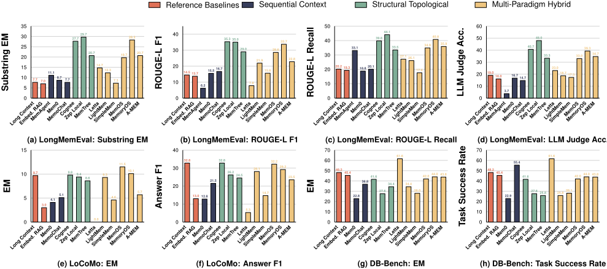
发现 1.（与工作负载对齐的记忆）。RQ1 表明，强大的 Agent 记忆并非由某种单一的通用表示所定义，而是取决于其对主导性工作负载瓶颈的支持程度：(1) 对于分散的跨会话推理，具备关系感知与时间感知的检索最为有效，如 Zep 和 Cognee；(2) 对于冗长但语义连贯的对话，由粗到细的过滤能够改善精确接地（grounding），如 MemOS 和 MemoryOS；(3) 对于有状态执行，保留交互轨迹比仅依靠精确词法匹配更为关键，如 Long Context。
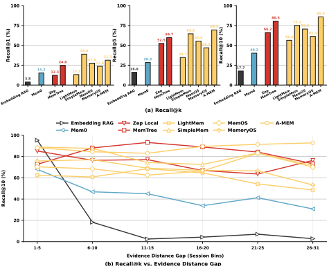
Experimental Setting. For 'How accurately can a memory system surface the stored evidence required by a query?' , we evaluate eight representative memory systems to assess evidence-level retrieval fidelity independently of downstream answer generation. Specifically, we use LoCoMo [20], which provides source-level gold evidence for queries with diverse evidence distances. We report: (1) Recall@K , where a hit requires the top𝑘 retrieved source-id groups to contain the annotated gold evidence, and (2) Recall@10 over six evidence distance gap bins (1-5 to 26-31), defined by the session distance between the query's final session and the earliest supporting evidence, to measure long-range retrieval accuracy. O1-(Structured Evidence Expansion): Retrieval fidelity depends less on surfacing one relevant memory early than on preserving an explicitly organized memory structure that can gather complete and temporally distant evidence. As shown in Figure 8, the results show a clear difference between early-hit precision and overall evidence completeness: SimpleMem achieves the highest Recall@1 (39.0), but A-MEM and MemTree become clearly stronger at larger retrieval budgets, reaching 69.5/85.9 and 59.7/80.5 on Recall@5 / @10 , respectively, while also remaining much more stable as the evidence distance gap increases; by contrast, the flat Embedding RAG baseline drops sharply after the shortest-gap bin. This pattern suggests that strong memory retrieval is not mainly a top-1 ranking problem, but an evidence-completion problem in which the required support may be old, scattered, or spread across multiple turns (e.g., personal details mentioned in different sessions or dated events referenced much later). More specifically, the results point to three different retrieval behaviors: (1) compression-oriented memory is effective for surfacing one highly relevant item early (e.g., a single salient personal detail or recent conversational fact); (2) linked or hierarchical memory organization is more effective for gathering complementary supporting evidence across the ranked results (e.g., combining pet names or dated events mentioned in different sessions); and (3) flat dense retrieval remains competitive mainly when the needed evidence is still close to the current context (e.g., recent conversational facts). For queries that require scattered or temporally distant support, the most competitive systems are therefore those that organize memory as a structured evidence space rather than a flat similarity cache.
| Method. | LoCoMo.Temporal.Exact Match | LoCoMo.Temporal.Answer F1 | LongMemEval.Knowledge Update.Substring EM | LongMemEval.Knowledge Update.ROUGE-L F1 | LongMemEval.Temporal Reasoning.Substring EM | LongMemEval.Temporal Reasoning.ROUGE-L F1 |
|---|---|---|---|---|---|---|
| Long Context | 8.1 | 26.9 | 20 | 18 | 12 | 24 |
| Embedding RAG | 1.6 | 7.9 | 20 | 17.8 | 10.7 | 22.7 |
| Mem0 | 3.2 | 6 | 15.6 | 17.1 | 10.7 | 22.4 |
| MemoChat | 2.4 | 15.4 | 8.9 | 12.9 | 10.7 | 25.3 |
| Cognee | 4 | 28.1 | 37.8 | 34 | 18.7 | 35.8 |
| Zep | 4.8 | 18.1 | 44.4 | 36.8 | 13.3 | 30.5 |
| MemTree | 5.6 | 18.6 | 31.1 | 30.6 | 8 | 29.9 |
| Letta (MemGPT) | 0 | 7.1 | 17.8 | 5.7 | 12 | 8.8 |
| LightMem | 4 | 20.1 | 15.6 | 20.2 | 12 | 28.6 |
| SimpleMem | 4.4 | 8.1 | 6.7 | 7.4 | 8 | 22.6 |
| MemOS | 8.9 | 28 | 28.9 | 30.5 | 12 | 31.1 |
| MemoryOS | 3.2 | 22.7 | 35.6 | 32.2 | 16 | 31.6 |
| A-MEM | 4.8 | 17.7 | 26.7 | 22.8 | 8 | 22.5 |
| Method. | LoCoMo.Temporal.Exact Match | LoCoMo.Temporal.Answer F1 | LongMemEval.Knowledge Update.Substring EM | LongMemEval.Knowledge Update.ROUGE-L F1 | LongMemEval.Temporal Reasoning.Substring EM | LongMemEval.Temporal Reasoning.ROUGE-L F1 |
发现 2.（以证据为中心的记忆组织）。RQ2 表明，检索质量更多取决于系统如何组织证据以供后续重构，而非其将某条相关记忆排在首位的准确程度。具体而言：(1) 早期定位与证据组装应被视为相互独立的设计目标；(2) 显式结构（如链接或层级）在支撑证据分散或时间上相距较远时最有价值，如 A-MEM 和 MemTree；(3) 扁平相似度搜索主要对短程访问有效。
实验设置。针对“Agent 记忆系统能否可靠地纳入修订后的事实、在更新后保持正确的时间状态，并在不同答案骨干模型之间保持鲁棒性？”这一问题，我们开展了两项实验：(1) 更新鲁棒性对比（Update Robustness Comparison），评估系统能否吸收事实修订并在更新后回答时间锚定的查询；(2) 骨干模型鲁棒性消融（Backbone Robustness Ablation），测试在仅更换大语言模型（LLM）骨干模型时，这一行为是否保持稳定。在 (1) 更新鲁棒性对比中，表 2 在来自 LongMemEval [31] 的 Knowledge Update 与 Temporal Reasoning 以及来自 LoCoMo [20] 的 Temporal 上对比了 11 个代表性记忆系统；两个 LongMemEval [31] 切片以 Substring EM 和 ROUGE-L F1 报告，而 LoCoMo [20] 切片以 Exact Match (EM) 和 Answer F1 报告；在 (2) 骨干模型鲁棒性消融中，图 9 在 LoCoMo [20] 上评估了 6 种代表性记忆配置在 4 个 LLM 骨干模型下的表现。O4-（时间状态外化）：没有任何单一记忆系统能在所有面向更新的切片上占据主导地位，但通过结构化组织来保留时间上有效证据的方法总体上仍最具竞争力。如表 2 所示，领先系统在不同切片之间发生更替：(1) 图或关系组织的记忆在直接事实修订上最强，其中 Zep 以 44.4 的 Substring EM 和 36.8 的 ROUGE-L F1 领先 Knowledge Update；(2) 关系组织的检索在时间上分散的证据上最强，其中 Cognee 以 18.7 的 Substring EM 和 35.8 的 ROUGE-L F1 领先 Temporal Reasoning；(3) 混合过滤记忆在精确的最新状态锚定上最强，其中 MemOS 取得 LoCoMo 上最高的 Exact Match (EM) 8.9，而 Cognee 取得最高的 Answer F1 28.1。然而，在覆盖全部切片的方法中，Cognee、MemOS 与 MemoryOS 总体上最接近前沿，这表明鲁棒性并非来自某种单一通用的记忆形式，而是来自在正确的结构层级上保留正确的时间证据。具体而言：(1) 时间或图组织的记忆对修订后的个人事实和带日期的事件最为有用（例如，在 LongMemEval 中聚合针对偏好、购买或过往活动的分散更新）；(2) 当正确性取决于当前有效状态时，混合或由粗到细的过滤最为有用（例如，从 LoCoMo 中冗长但语义连贯的对话里恢复最新的日期、属性或事件顺序）；(3) 当必须将过时的提及与更新后的提及区分开时，仅靠扁平上下文累积或稠密相似度的方法最弱（例如，在随时间反复提及之后，将较早的个人细节与其后续更正区分开来）。
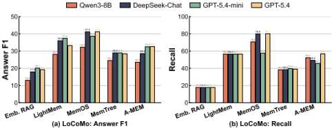
O5-（骨干模型鲁棒性）：骨干模型的变化更多改变的是答案的绝对质量，而不是哪些记忆流水线仍然有效，这表明稳定的更新行为主要在最终生成之前就已确定。如图 9 所示，在更强的生成器下 Answer F1 总体上会上升，但整体排序仅有适度变化：（1）MemOS 仍是最强的基于记忆的配置，得分为 32.2、41.2、38.6 和 41.2；（2）唯一值得注意的反转是局部的，即在 GPT-5.4-mini 和 GPT-5.4 下 AMEM 反超了 MemTree。这种稳定性意味着，更强的骨干模型大多是在相关证据已被定位之后才改进答案的生成，而不是弥补时间锚定上的不足。例如，在当前的 LoCoMo 时间类输出中，对于以日期为锚点的最新状态查询，MemOS 在全部四个骨干模型下都保持正确，而 Embedding RAG 则始终错误。更具体地说，外部组织能力更强的方法能为不同的 LLM 产生更稳定的证据集合，而更依赖 LLM 侧综合的方法则表现出更大的跨骨干模型波动。
9
发现 3.（时间更新保真度）。RQ3 表明，可靠的更新后行为是一个流水线层面的设计问题，而非纯粹的模型容量问题。具体而言：（1）应将可修订性内建于记忆表示之中，使后续事实能够绑定到同一实体或事件，而不是以无差别文本的形式追加，如 Zep 和 Cognee 那样；（2）查询时选择性应与工作负载瓶颈相匹配，当任务需要当前有效状态时使用过滤式或混合式路由，如 MemOS 和 MemoryOS 那样；（3）LLM 规模扩展只有在锚定成功之后才最有价值，因此更强的骨干模型应用于改进答案的表达，而不是作为解决过时或冲突记忆的主要机制。
实验设置。针对“当有效记忆时程因更长的上下文或更遥远的支持证据而增加时，Agent 记忆系统有多稳定？”这一问题，我们在 3 个基准测试（benchmark）上评估了 12 个代表性记忆系统，以评估其对不断增长的上下文长度和时间距离的鲁棒性。具体而言，我们使用：(1) LongBench [3]，它评估问答任务中受控的长上下文难度，结果以 Accuracy 在 Short、Medium 和 Long 上下文长度分桶上的表现报告，用于衡量上下文长度鲁棒性；(2) LongMemEval [31]，它评估随着先前交互量增长的多会话记忆，结果以 ROUGE-L F1 在历史会话数量分桶上的表现报告，用于衡量多会话稳定性；(3) LoCoMo [20]，它评估当支持证据位于对话较早位置时的记忆漂移，结果以 Answer F1 在最终会话与最早支持证据之间证据距离差距分桶上的表现报告。O6-（长时程证据保持）：当证据通过显式关系链接或层次化整合加以组织，而非以扁平文本形式留存供直接匹配时，记忆在更长时程下保持得更稳定。如图 10 所示，在 LongBench 中，SimpleMem 从 Short 分桶到 Medium 分桶几乎保持不变（Accuracy 从 35.2 到 34.9），而 Long Context 则从 42.6 降至 19.0，这表明一旦长输入中积累了干扰信息，仅靠更大的提示词无法维持答案质量。在 LoCoMo 中，对比更为鲜明：随着证据差距扩大，Embedding RAG 的 Answer F1 从 37.1 跌至 7.4，而 Cognee、MemOS 和 MemoryOS 等基于图或整合式记忆的系统在相同分桶上始终保持显著更高的水平；LongMemEval 对于在更长历史中保留跨会话结构的方法也显示出同样的优势。这表明，更长时程下的主要困难不在于记忆容量，而在于记忆表示能否将遥远的事实与回答所需的抽象保持关联。更具体地说，基于图或按时间组织的记忆为遥远的事实保留实体-事件-时间关系（例如，找回许多会话之前重复发生的个人事件），而层次化或摘要优先的组织方式则保留会话级结构（例如，先定位相关会话，再解析具体的局部细节），从而使 LLM 能够在最终生成之前收窄注意力。纯长上下文提示与扁平稠密记忆均无法提供上述任一形式的支持，因此随着有效时程的增长，其性能退化更为剧烈。
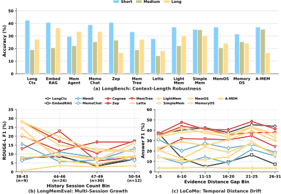
发现 4.（视界结构化记忆）。RQ4 表明，随着有效记忆视界的增长，主要挑战从存储更多历史转向在其上选择合适的抽象：（1）当长输入包含大量干扰项时，多视图过滤有所帮助，如 SimpleMem 所示；（2）当支持性事实被多轮对话或多个会话分隔时，关系感知索引有所帮助，如 Cognee 和 Zep 所示；（3）当系统必须先识别相关会话再解析局部细节时，由粗到细的摘要有所帮助，如 MemOS 和 MemoryOS 所示。
实验设置。针对“就效用-延迟权衡与跨工作负载延迟足迹而言，每个记忆系统的运行成本是多少？”这一问题，我们使用我们的 runner 所记录的统一时间开销轨迹，对 8 个代表性记忆系统进行评估。我们量化两个方面：（1）效用-延迟权衡，由 Avg. Operation Latency/Query 和 Normalized Utility 度量；以及（2）跨工作负载延迟足迹，由 Outlier-Filtered Avg. Total Latency/Query 度量。对于（1），Avg. Operation Latency/Query 的计算方式为记忆构建时间加上查询时间，对于具有累积性或突发性写入的系统，该指标被解释为摊销后的每查询成本；而 Normalized Utility 则是当前 LoCoMo [20] 和 LongMemEval [31] 运行中六个经最小-最大归一化的答案质量指标的平均值。对于（2），我们在三个基准测试（benchmark）上报告 Outlier-Filtered Avg. Total Latency/Query。
O7-（局部化维护）：最具成本效益的记忆机制是那些将维护局部化到记忆状态的一个有界子集的机制，而那些反复重组大规模全局状态的机制则效率最低。如图 11 所示，（1）在记忆增强系统中，LightMem 和 MemTree 占据了最强的效率前沿，其中 LightMem 在 3.67 s 的 Avg. Operation Latency/Query 下达到 48.3 的 Normalized Utility，MemTree 在 15.9 s 下达到 63.5；两者都明显比 MemoChat（15.4 s 下为 28.0）、Mem0（35.9 s 下为 21.4）和 A-MEM（17.9 s 下为 57.7）更高效；（2）效用较高的结构化系统则明显移向昂贵的一侧：MemoryOS 仅在 28.6 s 时才达到 82.0 的 Normalized Utility，而 Cognee 和 Zep 分别要到 116.5 s 和 155.1 s 之后才超过 84 的效用；（3）针对特定工作负载的延迟视角在 LongBench 上进一步凸显了同样的分化：LightMem 保持在 17.3 s，MemTree 保持在 116.7 s，而 Mem0、MemoChat、MemoryOS 和 A-MEM 则分别升至 374.2、460.2、490.0 和 552.1 s。这表明，运行效率与其说取决于系统是否使用结构，不如说取决于每次写入在该结构中传播的范围有多广。具体而言，（1）分段压缩和有界混合检索使 LightMem 保持在低成本区间附近；（2）路径局部的树聚合使 MemTree 无需全局刷新即可保留显著更多的效用；（3）图范围的整合、多存储同步或反复的全记忆重写虽然能带来更强的组织性，但随着记忆的增长会施加最沉重的运行成本。
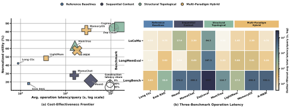
发现 5.（运行扩展规律）。RQ5 表明，效率由维护范围而非单纯的结构所决定。（1）局部化的更新与搜索带来最强的成本-效用平衡，如 LightMem 和 MemTree 所示；（2）更丰富的组织只有在维护时避免大范围重算的情况下才有帮助；否则开销会抵消其收益，如 Cognee 和 MemoryOS 所示；（3）在长上下文工作负载下，全记忆协调成为主导性的成本驱动因素。
为了理解端到端性能差异背后的根本原因，我们将 Agent 记忆系统分解为四个基础模块。通过系统地生成每次仅修改一个模块的受控变体，我们评估了每个模块对整体系统性能的贡献。
实验设置。针对“记忆抽象层级与结构化组织如何影响事实保真度与下游推理有效性？”这一问题，我们评估了三种以表示为核心的变体：(1) LightMem [7] 对比了 User-Only Raw（逐字存储用户话语）、User-Only Summary（将每个会话改写为 LLM 生成的抽象式摘要）与 User-Only Compressed（在保留原始措辞与事实内容的同时去除填充词和冗余词元）；(2) MemTree [27] 对比了浅层的 Flat-biased Setting 与 Deeper Tree Setting，以考察层次化文本组织如何影响记忆保真度。我们利用 LoCoMo 评估组合推理、利用 LongMemEval 评估多会话事实检索，以衡量细粒度事实保留与多步推理之间的权衡，并报告基于精确性与重叠的指标（例如 EM 和 ROUGE-L F1）。O8-（内容保真度）：对于同时维持事实回忆与推理质量而言，保留原始对话内容比增加抽象程度或层次结构更为重要。表 3 显示，LightMem User-Only Raw 在全部四项指标上均取得最佳结果，而 User-Only Compressed 在 LoCoMo 上表现接近（Ans. F1：38.6 vs. 38.9；EM：23.6 vs. 24.2），但在 LongMemEval 上急剧下降（Substring EM：10.7 vs. 26.0）；User-Only Summary 在两个基准测试（benchmark）上都明显更弱，而更深的 MemTree 设置相对于扁平设置仅带来有限的提升。这表明，主要的性能瓶颈在于表示所保留的可恢复证据的数量，而非其是否采用了更强的抽象或更深的结构。具体而言，(1) 当任务需要恢复精确的会话级细节时（例如回忆诸如 “Nu, pogodi!” 这样的标题），原始文本最为有效；(2) 轻度压缩在主要含义得以保留时仍能支持组合推理，但在精确细节匹配上变得不可靠（例如能够关联两个较早的事件，却遗漏了确切的日期或姓名）；(3) 更深的层次结构可以改善组织，但无法恢复在表示过程中被移除的信息（例如，父节点有助于在相关会话之间导航，却无法恢复被省略的细节）。
| Method Variant. | Method Variant. | LoCoMo.EM | LoCoMo.Ans. F1 | LongMemEval.Substr. EM | LongMemEval.ROUGE-L F1 |
|---|---|---|---|---|---|
| LightMem | User-Only Raw | 24.2 8.5 | 38.9 | 26 | 31.4 |
| LightMem | User-Only Summary | 15.6 | 11.7 | 17.4 | |
| LightMem | User-Only Compressed | 23.6 | 38.6 | 10.7 | 19.1 |
| MemTree Flat-biased | 18.2 | 30.7 | 23 | 29.9 | |
| Deeper Tree | 18.7 | 31.2 | 23.3 | 30.9 | |
| Mem0 | Default | 3.2 | 6.2 | 9.3 | 16.5 |
| Mem0 | Graph Store | 3.0 | 6.5 | 8.3 | 15.9 |
| Method Variant. | Method Variant. | LoCoMo.EM | LoCoMo.Ans. F1 | LongMemEval.Substr. EM | LongMemEval.ROUGE-L F1 |
发现 6.（表示粒度）。M1 表明，保留可用的证据比让记忆更紧凑或更有结构更为重要。(1) 高保留形式最能支持精确细节的恢复，如 LightMem User-Only Raw；(2) 轻度压缩能够保留推理，但会削弱精确匹配，如 LightMem User-Only Compressed；(3) 层次结构主要改善访问，但无法恢复被移除的内容，MemTree（Deeper Tree）变体即体现了这一点。
实验设置。针对“写入时的抽取选择如何影响事实保真度与下游推理有效性？”这一问题，我们分三组比较与抽取相关的变体：(1) MemoChat [18]，对比 Heuristic Topic 与 LLM Topic 两种分段方式；(2) MemOS [15]，在同一 tree_text 后端上对比 Fast Memorize 与 Fine Memorize；(3) LightMem [7]，通过仅从用户轮次或同时从用户与助手轮次抽取原始记忆，对比 User-Only Raw 与 Hybrid Raw。我们在 LongMemEval 上评估多会话事实检索保真度，在 LoCoMo 上评估下游多步推理，并报告基于精确匹配与基于重叠的度量（例如 EM 和 ROUGE-L F1）。
O9-（覆盖保持式抽取）：覆盖保持式的写入时抽取在事实检索与下游推理之间提供了最稳定的平衡。如表 4 所示，MemoChat 的 Heuristic Topic 在 LongMemEval 上优于 LLM Topic（10.7 对 7.3 Substr. EM；18.6 对 15.9 ROUGE-L F1），同时使 LoCoMo 几乎保持不变（23.0/33.5 对 22.5/34.4 EM/Ans. F1）；MemOS 的 Fast Memorize 在 LoCoMo 上远超 Fine Memorize（25.5 对 2.5 EM；40.8 对 5.0 Ans. F1），尽管其 LongMemEval 分数更低（20.7 对 22.3 Substr. EM；26.1 对 30.2 ROUGE-L F1）；LightMem 的 Hybrid Raw 相比 User-Only Raw 在 LoCoMo 上略有提升（25.5 对 24.2 EM；39.7 对 38.9 Ans. F1），而 LongMemEval 结果几乎不变（25.3 对 26.0 Substr. EM；ROUGE-L F1 均为 31.4）。这些结果表明，更宽泛、选择性更低的抽取能更好地保留下游可回答性所需的上下文，即使更具选择性的抽取在词汇层面的事实检索上能带来小幅提升。具体而言，(1) 保守的主题分组不太可能拆分一段持续的话题线索，或将简短的题外话（例如一次性的爱好提及）孤立出来；(2) 更轻量的记忆化更可能保留那些之后需要组合起来进行推理的细节；(3) 同时纳入用户与助手轮次可以保留仅从用户侧抽取可能遗漏的澄清性线索（例如某个日期或更精确的措辞）。
11
| Method Variant. | Method Variant. | LoCoMo.EM | LoCoMo.Ans. F1 | LongMemEval.Substr. EM | LongMemEval.ROUGE-L F1 |
|---|---|---|---|---|---|
| MemoChat | Heuristic Topic LLM Topic | 23.0 22.5 | 33.5 34.4 | 10.7 7.3 | 18.6 15.9 |
| MemOS | Fast Memorize Fine Memorize | 25.5 2.5 | 40.8 5.0 | 20.7 22.3 | 26.1 |
| User-Only Raw | 30.2 | ||||
| LightMem | |||||
| Hybrid Raw | 24.2 | 38.9 | 26.0 | 31.4 | |
| 25.5 | 39.7 | 25.3 | 31.4 |
| Method Variant. | Method Variant. | LoCoMo.EM | LoCoMo.Ans. F1 | LongMemEval.Substr. EM | LongMemEval.ROUGE-L F1 |
发现 7.（延迟过滤原则）。M2 表明，记忆抽取应在写入时保留上下文，而非激进地过滤细节：(1) 更粗的分段通过将相关线索保持在一起，有助于跨话题线索的问题；(2) 有限的重写通过保留那些只有在后续组合时才显现重要性的细节，支持组合式推理；(3) 同时存储用户与助手轮次通过保留精炼的表述以供后续访问，有助于以澄清为主的对话。
实验设置。针对“检索融合与以推理为中介的路由如何影响检索相关性与来源敏感的精确率？”这一问题，我们比较两组变体：(1) Hybrid-Balanced 配置下的 A-MEM（采用适度的稠密-稀疏融合）与 Hybrid Sparse-Leaning（提高稀疏贡献的权重）进行对比；(2) No Planning 配置下的 SimpleMem（直接进行检索）与 Planning Only（增加一个显式规划步骤）以及 Planning + Reflect（进一步引入一个轻量级反思阶段）进行对比。我们在 LongMemEval 上进行评估以度量分散历史的检索相关性，并在 LoCoMo 上评估来源敏感的记忆访问与支持性记忆识别，报告基于重叠的度量指标（例如 Substr. EM、ROUGE-L F1）。
| Method Variant. | Method Variant. | LoCoMo.Ans. F1 | LoCoMo.Recall | LongMemEval.Substr. EM | LongMemEval.ROUGE-L F1 |
|---|---|---|---|---|---|
| A-MEM | Hybrid-Balanced | 24.6 | 49.9 | 27.5 | 25.9 |
| A-MEM | Hybrid Sparse-Leaning | 23 | 44.3 | 24.3 | 22.8 |
| No Planning | 18.7 | 86.4 | 17 | 22.9 | |
| SimpleMem Planning Only | 20.7 | 90.6 | 21.7 | 27.9 | |
| Planning + Reflect | 20 | 88.6 | 21.3 | 26.1 |
| Method Variant. | Method Variant. | LoCoMo.Ans. F1 | LoCoMo.Recall | LongMemEval.Substr. EM | LongMemEval.ROUGE-L F1 |
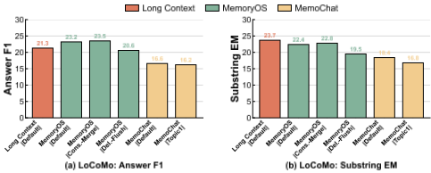
O10-（规划与融合）：显式规划与均衡的检索融合带来了检索有效性上最显著的提升。如表 5 所示，A-MEM 在 Hybrid-Balanced 下取得最佳性能，达到 24.6 Ans. F1 和 27.5 Substr. EM，而在 Hybrid Sparse-Leaning 下分别为 23.0 和 24.3；SimpleMem 则在 Planning Only 下取得最佳性能，达到 20.7 Ans. F1、90.6 Strict Rec.、21.7 Substr. EM 和 27.9 ROUGE-L F1，均高于 No Planning 与 Planning + Reflect。这些结果表明，更强的检索与路由性能来自添加有用的结构，而非简单地增加稀疏匹配或额外的推理步骤。具体而言：(1) 对于同时保持答案质量与相关性（例如语义相关但措辞各异的事实），适度融合似乎比偏稀疏融合更为有效；(2) 显式规划始终优于直接检索（例如多约束记忆查询）；(3) 在规划之上再叠加反思并未带来进一步提升，这表明额外的深思可能削弱而非改善路由决策。
发现 8.（检索策略指导）。M3 表明，检索质量的提升主要来自有针对性的结构，而非增加复杂度：(1) 当证据在语义上相关但在词汇上多样时，适度的混合融合更为可取；(2) 轻量级规划对受约束的记忆查找是有效的；(3) 一旦路由已经确定，额外的反思带来的收益有限，且主要增加开销。
实验设置。针对“整合激进程度、刷新时机与摘要粒度如何影响更新正确性与长程记忆一致性？”这一问题，我们将与维护相关的变体分为两组进行比较：(1) 采用默认多主题整合的 MemoChat 与强制每个窗口生成单主题摘要的 Topic1；以及 (2) 采用默认即时整合的 MemoryOS 与在写入后端之前扩大短期缓冲区的 Delayed-Flush，以及提高主题相似度阈值以实现更严格同化的 Conservative-Merge。我们在 LoCoMo 上进行评估，以检验这些维护选择能否在扩展上下文中保留更新后的事实并维持连贯的记忆使用。
12
O11-（保守整合）：在维持与答案相关的记忆方面，保守整合比延迟刷新或过度粗糙的摘要更为有效。如图 12 所示，采用更严格合并的变体 MemoryOS (Conservative-Merge) 相比默认 MemoryOS，Ans. F1 从 23.2 提升至 23.5，Substr. EM 从 22.4 提升至 22.8；而延迟刷新使同一系统降至 20.6/19.5，在 MemoChat 中强制单主题摘要也低于其默认设置（16.2/16.8 对 16.6/18.4）；Long Context 在 Substr. EM 上仍以 23.7 保持最高。这表明，当维护能够有选择地整合证据、既不将其搁置不决也不过度压缩时效果最佳，而原始上下文仍能更好地保留确切措辞。具体而言，(1) 保守合并可以保留相关细节以供后续重新组合（例如分散的爱好提及）；(2) 延迟刷新使更多证据在检索前处于未解决状态（例如跨轮次拆分的活动）。
发现 9.（维护设计原则）。M4 表明，记忆维护在均衡的更新机制下效果最佳：(1) 保守整合为长程推理保留跨轮次关联；(2) 延迟刷新使近期证据在查询时仍处于碎片化状态；(3) 过度粗糙的摘要会掩盖稀疏但有用的线索。
我们从数据管理的视角对现有的 Agent 记忆系统进行了全面的综述。我们对典型的 Agent 记忆系统开展了深入的端到端性能评估，并探索了其适用的应用场景。此外，我们通过构建多种记忆模块变体，深入探究了各个构建模块的影响，从而识别出在表示、提取、路由和维护方面最有效的方法，以及支配运行成本和长程稳定性的最具影响力的因素。最后，我们总结了各项研究发现，为用户选择合适的记忆架构提供了指导，并展望了有前景的研究方向。我们还将发布测试平台和评估框架。
13